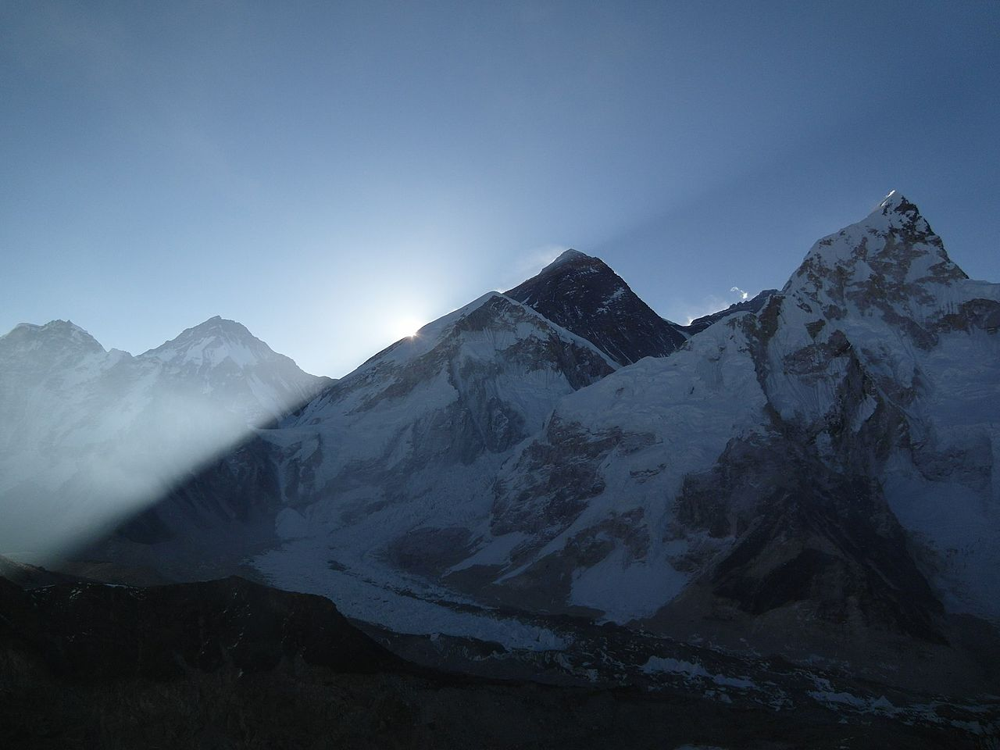
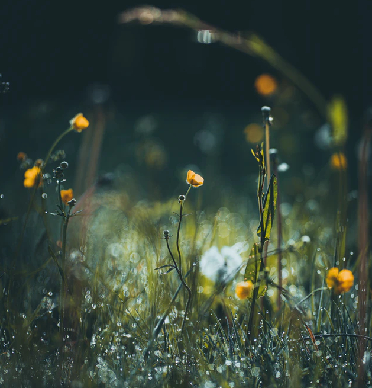

May 16th 2020, 7:23:17 pm EDT

Listen
We must make time, to enlarge our view,
and in everything we do, we must first think things through.
Above all, to thine own self be true,
but also your own world, should fit like a good shoe.
With each step you took your mind grew,
with all new things, we never really start anew.
Where ever we go, whatever we go through,
we learn and our wisdom evolves, as we continue.
Sure, sometimes it feels like we don't know what to do,
but when you get sad, the whole Universe becomes slightly more blue,
We may not know exactly what you are going through,
but many of us have been there, we too got stuck until we grew.
Many great beings get hurt, but all plow on through,
you are not alone, in our own thoughts, we sit right next to you.
Please push trough the pain, and look through the zoo,
when all is writ, and said and done, we all still need you,
There is a blinding beauty to who you already are - I wish you knew,
with each step forward, you become a brighter star, and we love you.
Don't worry, so as long as to your own self you stay true,
it will all pass, and when looking back you'll say - "I Grew."
May 15th 2020, 9:30:32 pm EDT

Listen
Like steps on a mountain, each epoch stands in support of the next,
like the pages of a journal, together, they hold the sacred text.
We learn, we may fail, or triumph, and the next epoch follows,
but every new epoch grows from the one previous.
We can't leap from one place to another,
we can only move up, or graduate up, or build up, or step up.
To leap, is to stay a child in an aging body,
to go up, to grow up, and carry on to no end, is to become an adult.
In our youth we must learn to stand our ground,
and anchor ourselves to something that moves us.
As we age, having followed that path,
we'll be standing upon our own mountain,
A great mountain of personal wisdom,
where once only a direction lay.
These mountains rise with each epoch in our life,
every once in a while we pause, to bring all that we are together - higher.
Epoch by Epoch, we ascend, we can already see the sunshine,
but our journey comes with no end.
This is a simple life, first we conform and then break away,
we become wise, and later in life, our wisdom transforms into Enlightenment.
It is a road of Adventures, Books, Poems, and Inspirations,
it has tears of sadness, but in return we grow stronger.
What it is all for, is to Live a Life of Simple Dignity,
or rising when we fall, of learning when we get tricked.
Of protecting our bodies and minds, and growing stronger,
of adding to our existing body of wisdom.
With each epoch we climb over what we previously thought were our limits,
As we get up, and stand up, we reach a new plateau.
We rest, we take in the sun of this new height,
and get busy building higher, and higher.
None of us begged to be born, we were nothingness,
and temporarily all these atoms came together to give us, ourselves.
And eventually, we'll return to our nothingness,
and the atoms will disperse, to become parts of other beautiful things,
While we are in this state, however, the first and foremost order!
...is to Thrive, to Grow, to Expand, to Rise, to Build, and to Ascend.
Whether we know it yet or not, the road that we are on, is one.
It is the same road that our 90 year old selves will wonder about.
They will go up and down the Epochs, and ask questions.
there will be some regrets, but we do have a chance to solve them now.
There will be enough triumph to bring blinding light to all the sadness,
and the beautiful memories will wipe out all the unimportant things.
All that stands in the way of our growing up,
must be pushed aside, growing up is our life.
We must grow up, rise up, all the way up.
Each and every epoch ahead, demands this.
Our minds require wisdom, wisdom fuels our decision making,
and our choices dictate all our life ahead.
Life is precious, it is to be lived in Dignity and Authenticity,
and you are meant to become a Great Being.
Everest photo:
author,
license.
May 14th 2020, 11:46:46 pm EDT

Listen
Wherever I went, Friday magically followed,
there always seem to have been a tree that was hollowed,
And the moment I looked at food,
he knew, dinner was going to be good.
Wherever the Raccoons came out at night,
Friday, was always there, my Fat Spirit Guide.
Over at Little Torch Key, at Veterans Beach, with easy access to water,
he lived up a Palm Tree, with his Furry Wife and Tiny Daughter,
Once I got lonely, and threw a little Tortilla all the way up there,
he popped up, and it looked like he smiled - I swear.
Over at Ludington State Park, at the Jack Pine Hike-in Campground,
I woke up at 3 am, hearing a strange sound.
He was trying to pull out my hamburger buns,
probably to feed all his furry sons.
The bag was tied, up in a tree,
nothing could stop him - Because he was free.
I got out of my tent, and delivered his late night bite,
by tossing it into my cranky neighbor's camp site.
The whole woodland family, knew that eventually I had to go back,
Friday left a little footprint on my pillow, to help me pack.
I was staying up in the trees, on top of ancient dunes,
the only light was that of stars, and the moon's.
I called them Nordhouse Skylands,
but, if you go out there, be ready for his smart little hands,
Bring a travel lock to secure the zippers on your tent,
and remember, Friday loves you as friend, he means no ill intent.

My Dear Readers, we may each need a few weeks of Wilderness in our life,
so start slowly packing, buy a backpack, bug spray, and a knife,
And just keep your adventure pack by the door,
if life ever gets you down, smile! and head for that Lake Michigan shore.
You can park at the Nurnberg Trailhead,
and don't forget to bring a little bit of stinky cheese,
and piece of stale bread.
Raccoon photo:
author,
license.
May 13th 2020, 9:16:43 pm EDT

Listen
Some adventurers,
wrestle bears.
Others,
runaway from their fathers.
I,
bemoan the lack of Wi-Fi.
That is, until the night comes about,
at which point all the wild creatures come out.
I've heard stories of owls swooping down from the air,
just to rip out whatever is left of a man's hair.
Then there are the occasional mad deer,
always shimmy-shammying around like they had a beer.
The coyotes are especially frightening,
they come in groups, flashing their eyes like lightening.
One time I tried to turn on a flashlight,
as it turned out - to all the big spider's delight.
Let me tell ya, It takes a man with a lot of brass,
not to scream, when a spider crawls out with a huge glowing ass.
Once, an older lady from a near by camp went to get more booze from her car,
and then misjudged her distance, and walked back too far.
I was sleeping on the ground in my tiny tent,
and then all of a sudden she started yelling out in her lost torment.
Of course, in the middle of the night, and woods and my sleep,
she didn't sound like a lady but rather some huge creepy creep.
She found her way back, and I am sure they partied hard,
but not knowing what made all those screams, I slept - on guard.
Porcupines, oh, you've never seen one like I did,
it was huge, covered in spikes, and really fit.
It could outrun a car or two,
probably, bite a tire and chew.
But then I came across a sign,
and it turned out that the biggest creature, was not the Porcupine,
I was always pretty happy that none of the creatures that bite,
could actually take me down in a single swipe.
But the sign read, Beware Of Bear
and that to me was the biggest scare.
May 12th 2020, 9:28:17 pm EDT

Listen
I like riding around on my bicycle,
but today I felt like an icicle.
Just got back from this years first long ride,
I feel cheerful and mighty satisfied.
All the cute creatures are still there,
and thankfully, still no signs of angry bear.
Riding alone, I reminisced about a warmer time,
when a car slowed down and screamed like there was some crime.
I had no idea what they were saying,
but waiving their hands, it was a danger they were portraying.
But, I was like, "Oh, whopped do, who knows..."
and in the next moment, I had to take off most of my clothes.

I have never been in such great rain,
it was like standing next to a burst water main.
I loved it, the rain was fragrant, fresh and warm,
I could never call that a storm.
The sun came out instantly, I was like "K. rain, thanks, bye.",
and then I had to hang out all my clothes to dry.
The 13 mile ride back home was full of mud,
I had to lift my legs, and will my bike across a flood.

I am so glad no one will ever know about this,
but still, these are the memorable moments
that make me reminisce.
May 11th 2020, 4:21:18 pm EDT

Listen
You can leave, you don't have to ask the Teacher,
if they are not teaching you, they can only delay your education.
If school is wasting your time, teaching you nothing,
That is a crime, and if you stay; your foreshadowing.
We have something now, my Dear Friend.
We have Internet Lectures, Audio Books, and Start-up Incubators.
No teacher can teach you better than failing at your first start-up,
no teacher can bring you with more wisdom, than failing at your first start-up.
You can go, so as long as you can do it better yourself.
So as long as your aim is Greatness.
Take your books, and go.
don't forget your friends.
Since you are the first to rise,
you will be the new Teacher.
Prepare your Audio Books wisely,
and do not forget YouTube Lectures.
You'll need investors,
and although, all your parents put together make quite an investor.
You need to approach the pros,
and listen carefully as they will proud to help all of you.
People believe in authenticity,
investors know what kind of student stays, and what kind of student leaves.
All those failures that were crushing you in school,
are worth their weight in gold when building a new school.
Research Homeschooling and Un-schooling, bring your friends,
if your parents keep yelling, find someone more worthy of you.
Parents are not gods, they make mistakes,
they are scared of responsibilities, scared of unknown.
Don't let the yelling get to you,
they need to learn to communicate their ideas better.
Whatever fails you, Your Friends, Your School, Your Parents,
It means you got to go - or they got to go - or you won't be able to grow.
Lack of education, is a terrible curse,
bough on by bad schools, bad parents, and bad friends;
First it will make you blind,
and then you will lose your mind.
That's probably,
how slavery worked.
Whatever is interfering with your Real Education,
is attacking you, cheating you of wisdom, freedom, independence.
You cannot agree to this, You have to rise,
rise against stupidity, bondage, and slavery.
If everyone failed you,
then the universe has called upon you to become your teacher.
When you grow up,
walking out of that charade, will be your favorite story to tell.
Your listeners will be the same age you were,
the books you loved, will become the books they'll love too.
You will set them free,
help them to wisdom, help them to independence.
Learn, so that you can become a Successful Entrepreneur,
find your start at Start-up Accelerators.
Go there early, as failure is a powerful teacher.
Show them your Hunger, show them how much you have learned on your own.
Set yourself free,
a life without wisdom is slavery.
Teach your Investors what a Good Book really does,
help their employees to discover knowledge, to hunger for more.
Would you, as a Powerful Great Businessperson,
take the diploma you are working on, seriously?
Seriously?
Or would you see a child waiving a little flag,
hoping to squeeze in, if there is room for one more.
Why do you need teachers anyway,
they can only stand between you and the Great Beings.
Find a road less traveled, find the more grassy patch,
bring a Picnic Basket, Audio Books, and Video Lectures.
Let That Be Your Classrom,
and let your future be made by you.
Learn at your own pace,
in your own sequence.
Any lecture worth watching is on the internet now,
that is what the internet was created for.
Helping The World,
Really Learn.
May 10th 2020, 9:57:32 pm EDT
Listen
We are not robots, to be taught,
we are humans powered by inventive and original thought.
This is why life has no instruction book,
if it did, it could only ever tell us where to look.
For the sake of this poem,
let us image that this book does, exist.
Here is how I imagine it would read,
and let me start with the opening creed:
- If someone is attacking you call for help, until it comes.
- If school is treating you unfairly, go hang out with the Principal.
- You need to build your Content of Character.
- Your Body of Wisdom is a Key To Happiness.
- You Must Grow All The Way Up.
- You are to Become a Great Being.
- You Are Beautiful, You Were Beautiful All Along.
It would point to learn from The Greats
as they managed to lift impossible weights.
It would also say that we are delicate,
and our minds are extremely intricate.
It would add, Hey!
You can not grow up in places that weigh.
You have to find you own place in the world,
and you have to quit doing what you are told.
Above all it would state,
that you are Free,
and Full of Beauty.
and searching for Wisdom is your duty.
{kind=link}
_2.jpg){kind=link}